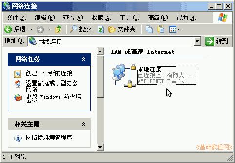
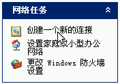
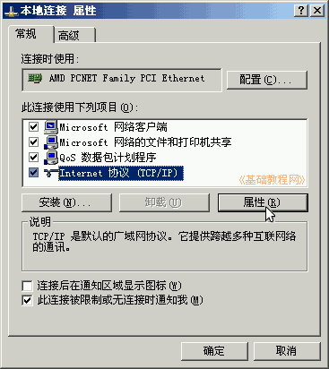
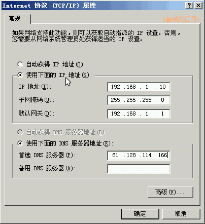
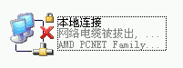

控制面板基础教程
作者：TeliuTe 来源：基础教程网
网络连接选项，可以设置网卡本地连接、ADSL宽带连接和无线连接，下面我们来看一个练习；
1、网络连接
1）进入经典视图，点“网络连接”图标出来一个面板；
2）里面有一个本地连接，可能还有无线连接和宽带连接；

2、使用
1）点左边栏任务格里的“创建一个新的连接”，可以创建一个上网的宽带连接；
详细步骤，请参阅：新建连接向导

2）如果是局域网上网，或者是几家共用上网，或者是通过路由器上网，在本地连接上“点右键-属性-Internet协议(TCP/IP)-属性”，

设置IP地址和DNS地址等，这些数据可以在说明书上找到，或者询问一下网络管理员；

3）另外，图标上有一个小锁，表示受限制有防火墙，如果图标上有一个红叉，表示网络断开了没连接上；

本节学习了网络连接的基础知识，如果你成功地完成了练习，请继续学习下一课内容；
本教程由86团学校TeliuTe制作|著作权所有
基础教程网：http://teliute.org/
美丽的校园……
转载和引用本站内容，请保留版权信息和本站链接。